Flow Metrics
Helping organisations understand and improve the flow of value.
Helping organisations improve flow, forecasting and product delivery.
Book a free consultationTechnology is evolving faster than ever. Organisations are under constant pressure to deliver value more quickly, make better decisions with data and adapt to changing customer and business needs. While many have adopted Agile practices, improving delivery requires more than stand-ups, backlogs and ceremonies.
My focus is helping organisations improve the flow of value from idea to customer. That means understanding how work moves through systems, using data to make better decisions and creating product operating models that enable teams to deliver sustainably. Whether it is forecasting with greater confidence, improving flow, introducing AI responsibly or helping leaders create the right environment for teams to succeed, my approach is always grounded in evidence rather than opinion.
I work with organisations to simplify complexity, align strategy with delivery and build products and services that deliver meaningful outcomes for customers. My goal is not simply to help teams work differently, but to help organisations deliver better.
Helping organisations understand and improve the flow of value.
Probabilistic forecasting using Monte Carlo simulation and evidence-based approaches.
International conference talks, meetups and workshops.
Free tools including FlowViz for Jira Cloud and Azure DevOps.
On the continuous learning journey, I have been fortunate enough to speak at numerous recognised global Agile conferences, as well as numerous internal events.
When speaking, I try to differentiate from other talks by always providing real examples/application and the stories that emerged from it.


I am dedicated to helping organisations evolve their ways of working based on agile values and principles. Whether it be through coaching agile leadership, guiding teams towards collaboration and continuous improvement, or helping practitioners learn with new concepts.
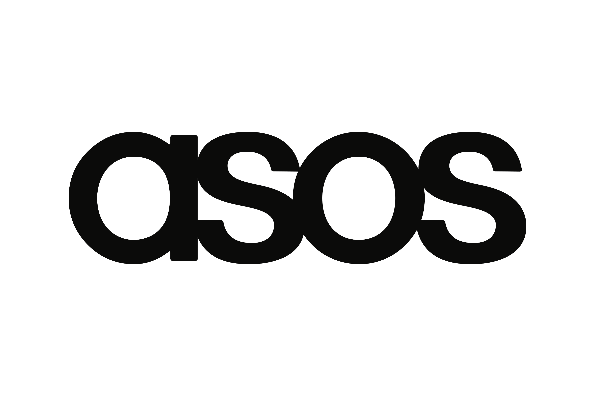

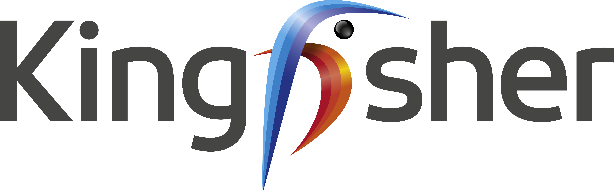
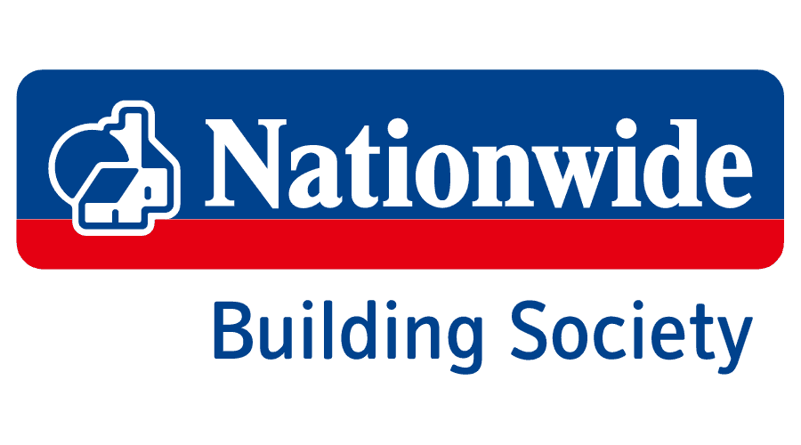
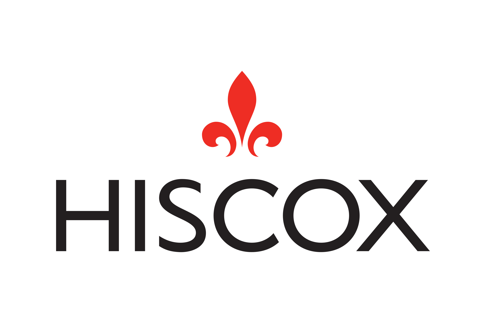
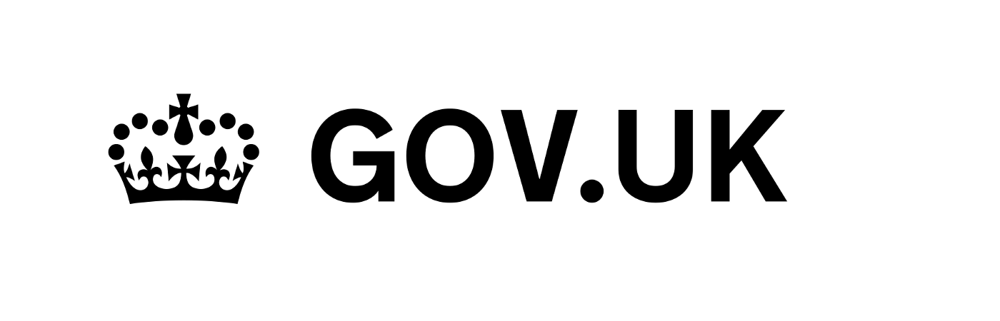
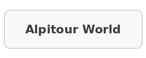
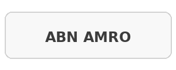
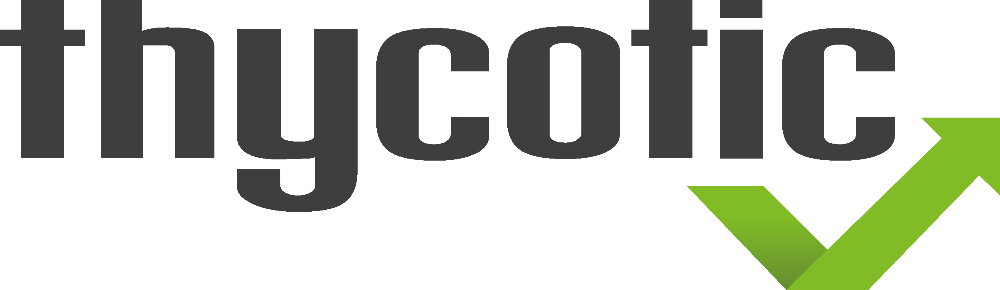
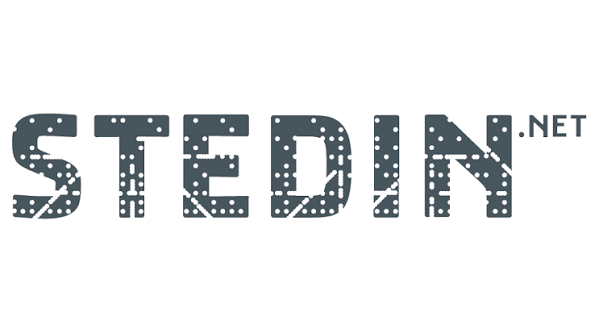
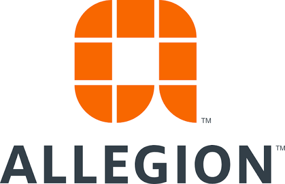
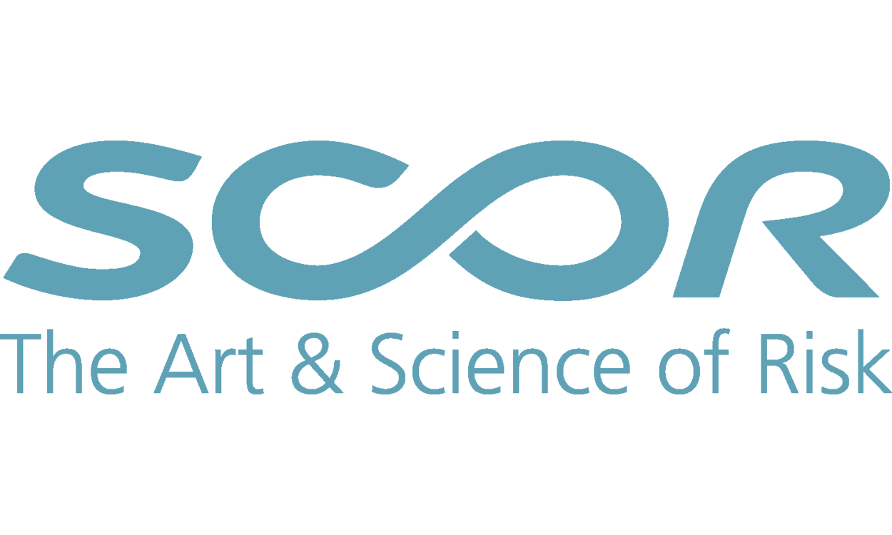
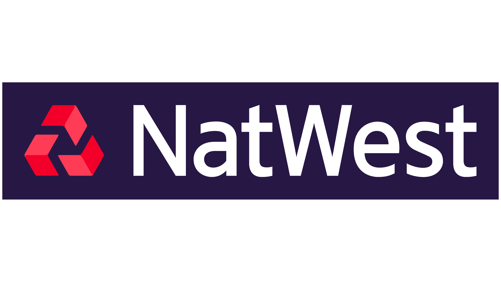